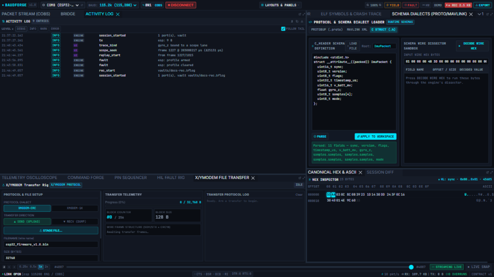

REC & Vaults
REC records the raw wire — every byte, both directions — into an append-only .bflog vault on the engine host. Decoding happens at review time, so a vault never goes stale when your schema improves.

Recording
- Click the STANDBY pill in the ribbon (top right). It becomes a pulsing red ● REC with a live byte counter — every byte the wire moves, it counts.
- Do your thing: stream telemetry, send commands, run faults.
- Click ● REC again. The vault flushes and seals; a toast names the file (default
vaults/rec-<timestamp>.bflog).
Rules the recorder enforces:
- No clobber, ever: a REC press can never truncate an existing capture — if the path exists and is non-empty you get a
VaultExistserror and a chance to rename. - The session itself records to its own vault (the desktop app auto-vaults to a temp capture), so a session that was never explicitly REC'd still has its raw wire sealed on exit.
- On engine shutdown the vault is sealed and indexed (
<vault>.bfidx), so it opens without repair. The Activity Log is saved next to it as<vault>.activity.jsonl.
Reviewing a capture
The desktop launcher's REVIEW A CAPTURE (.bflog) opens a vault read-only: no ports, no recording, the file cannot be damaged. Frames decode with the workspace sidecar (<vault>.bforge.toml) written beside the capture at REC start, so the reviewed frames decode with the same schema that was live when they were captured. From a browser, point the engine at a vault: bforge.exe serve --vault vaults/run.bflog …, then scrub with the DVR and /api/vault/frames.
The scrubber contract
Vault review is a first-class mode: the scrubber reads the sealed index, seeks by timestamp, and decodes windows on demand (damaged_tail reports whether the file needed repair — a clean seal always says false).
Tips
- Raw bytes in, decoded frames out — a capture made before a schema fix re-decodes correctly afterwards (see Session Diff for comparing two captures).
- Big sessions are fine: the writer flushes continuously and the index makes seeking O(log n), not O(file).